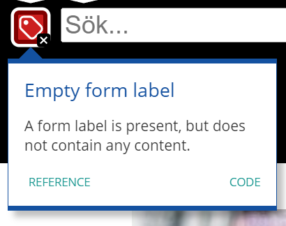
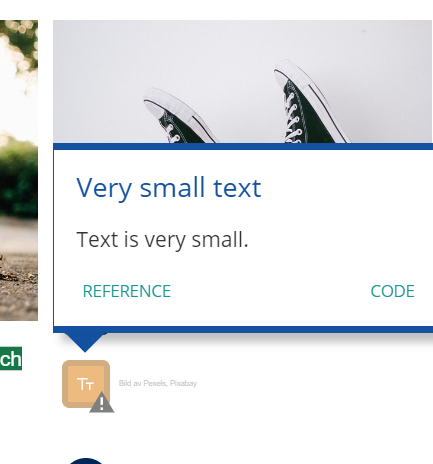
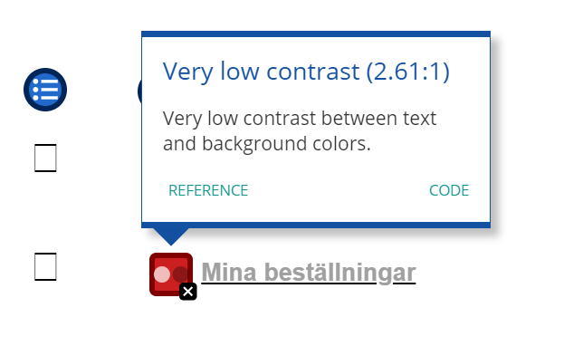
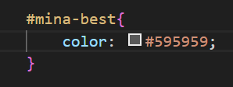
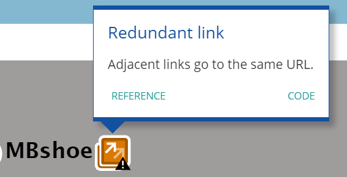

Nyckelord är viktiga att identifiera på din hemsida för att öka sökmotoroptimeringen (SEO).
Sneakers
Bildtext: En graf över intresset för sökordet Sneakers.Bildtext: En karta som visar andelen sökningar på Sneakers i Sveriges län.
Det första nyckelordet jag har valt ut är ordet sneakers. Sneakers är ett ord som inte är väldigt unikt i sig, men eftersom hemsidan i stort sett bara riktar in sig på denna typ av skor så blir det oavsett något mer unikt än de sidorna som har ett större utval av skotyper. Eftersom just sneakers är huvuddelen av hemsidans försäljning så vill jag ändå säga att detta ordet är väldigt relevant och unikt för just denna hemsidan vilket gör att det är passande att ha som nyckelord. Som kan ses på bilderna har sneakers en väldigt hög andel sök i de största delarna av Sverige och fortsatt relativt hög andel sök i resten av landet. Söken är vanligast i april vilket kan förklaras naturligt eftersom det är då det är mest säsong för dessa skor.
Damskor/Herrskor
Bildtext: En karta som visar andelen sökningar på Damskor i Sveriges län.Bildtext: En karta som visar andelen sökningar på Herrskor i Sveriges län.
Två andra nyckelord som jag tänkte kunde vara relevanta till min hemsida är Damskor och Herrskor. Dessa två kategorier är båda ofta sökta på, men ordet Herrskor är faktiskt en del mer sökt på än Damskor. Jag tycker dessa ord passar bra som nyckelord eftersom jag har länkar direkt från startsidan som tar dig till dessa kategorier med en gång. De är kanske inte så unika men trots allt väldigt relevanta och mycket använda av mig i länkar.
Startsida
Bildtext: En karta som visar andelen sökningar på Startsida i Sveriges län.
Detta kanske inte har lika stor andel sök, men sökningarna har trots allt stor spridning över landet och det är ett ord som jag använder mycket i länkar på min sida.
Bildtext: En karta som visar andelen sökningar på Startsida i Sveriges län.
Shoppa är ett ord som är mycket använt på MBshoes sida i både länkar och knappar vilket gör det till ett passande sökord. Ordet har också bra sökandel i flera delar av Sverige och det är väldigt spritt geografiskt.
2. SEO (sökmotoroptimering)
SEO är en förkortning för det engelska begreppet Search Engine Optimization. För att sammanfatta begreppet betyder det att man vill optimera sin hemsida för att bli synlig högt i en sökmotors sökresultat. (sitea.se)
För att uppnå detta krävs det mycket arbete inom flera aspekter. I den här analysen kommer jag att undersöka några av dessa.
Analys med hjälp av Lighthouse
Lighthouse är ett hjälpmedel av Google för att testa bland annat SEO-vänligheten på en hemsida.
Startsida: mobil
Bildtext: Inställningarna som är på för att göra analysen av SEO med hjälp av lighthouse.
Här är inställningarna jag har gjort på alla mobilsidor som ska analyseras.
Bildtext: Betyg av lighthouse.
MBshoes startsida på mobil får 90 i betyg av lighthouse vad gäller SEO. En feedback som sidan ger är att det saknas en meta beskrivning.
Bildtext: Lighthouse menar att ikonerna inte är tillräckligt stora.
Här kommer mer feedback vad gäller ikonerna som borde vara minst 48x48px enligt lighthouse, medans mina endast var 27x27px. Det borde också gärna läggas till mer padding runt ikonerna så att man får större yta att trycka på.
Bildtext: Övreraden- Manuell tesing möjligt. Undreraden- Element som är bra med sidan.
Här kommer positiv feedback om meta tagen viewport, title elementet och HTTP. Metatagen hjälper bland annat till att optimalisera sidan för mobilanvändare. Title elementet är bra för folk som använder sig av textuppläsare för att kunna navigera sig på vilken sida man befinner sig på. Det är också bra vad gäller SEO eftersom att Google gillar när man får en uppfattning av sidan innan man har tryckt sig in på den.
Biltext: Element som är bra med sidan.
På denna bild ser vi ytterliggare mer positiv feedback om att länkarna har beskrivande text, om att crawlers lätt kommer sig runt på sidan, att sidan inte är blockad från indexing, att bilderna har alt attribut och att dokumentet har giltig hreflang. Att länkarna har en beskrivande text är bra för alla som använder hemsidan eftersom den beskriver vart man kommer om man trycker på länken. Crawlers är de som går runt på din hemsida för att se hur bra den är och eventuellt hjälpa dig att komma närmare googles första sida. I indexet samlas all information om din sida, så om den inte är blockerad är det en fördel. Om bilderna har ett alt attribut är det bra för de som använder uppläsningsverktyg eftersom att det är en beskrivande text av bilden. Hreflang innebär spårket man har valt på sidan så att sökmotorerna vet vilken version som ska visas.
Bildtext: Textfonten är 76.18% riktig. Dokumentet undviker plugins.
Här visas en bild på att textfonten är mestadels riktig, men med undantag av 23.82%. Detta kan enkelt förklaras med att classen som jag valt att kalla bildtext är i mycket liten fontstorlek. Detta är eftersom jag helst inte ville att det skulle synas, men att det var obligatoriskt för oblig 3. I övrigt har jag använt mig av en fontsize på minst 12px som är rekomenderat.
Bildtext: Rubrik som säger Inte tillämpbar, med 2 underrubriker.
Här finns två grejer som inte är tillämpbara, det vill säga inte finns i dokumentet. Det finns ingen beskrivning för vart crawlersarna kan gå, vilket jag dock inte anser som ett problem då jag inte har någon speciell ordning som jag föredrar att de ska gå. Inte heller har jag lagt till vilka länkar som borde synas på google.
Startsida: dator
Bildtext: Inställningarna som är på för att göra analysen av SEO med hjälp av lighthouse.
Här har jag gjort samma inställningar som första analysen, utom device där jag ändrade till desktop.
Bildtext: Betyg av lighthouse.
MBshoes startsida på dator får också 90 i betyg. Samma text om meta som stog på mobil finns kvar på dator.
Biltext: Element som är bra med sidan.
Här visas samma bra element som på mobilsidan.
Biltext: Element som är bra med sidan.
Här visas samma bra element som på mobilsidan.
Bildtext: Rubrik som säger Inte tillämpbar, med 4 underrubriker.
Här finns de samma två grejer som inte är tillämpbara + 2st nya. De två nya menar att textfonten inte är tillräckligt stor, även här är det på grund av den bildtexten som jag egentligen inte ville ha med. Det andra handlar om att tryckbara element så som knappar ska ha en större yta att trycka på.
Produktsida: mobil
Även produktsidan för mobil fick 90 i betyg. Under betyget står det om storleken på knapparna.
Bilden visar att MBshoe har fått 90 i betyg av lighthouse. Under betyget står det att en Meta beskrivning saknas i dokumentet och att 89% av sidan är mobile friendly med tanke på storleken av knappar och så vidare.
Bildtext: Övreraden- Manuell tesing möjligt. Undreraden- Element som är bra med sidan.
Samma feedback som på startsidan.
Biltext: Element som är bra med sidan.
Här visas samma bra element som på mobilsidan till startsidan.
Här visas samma bra element som på mobilsidan till startsidan.
Här är textfonten något bättre betygsatt än på startsidan, men oavsett är det forfarande samma orsakt gällande bildtexten.
Bildtext: Rubrik som säger Inte tillämpbar, med 2 underrubriker.
Här visas samma 2 saker som visades för mobilsidan till startsidan.
Produktsida: dator
Bildtext: Bilden visar betyget som sidan har fått av lighthouse och en funktion där man kan testa ytterligare funktioner manuellt.
Detta är samma meddelanden som kommit upp på de andra sidorna.
Bildtext: Här visas samma bra element som på mobilsidan.
Detta är samma meddelanden som kommit upp på de andra sidorna.
Bildtext: Rubrik som säger Inte tillämpbar, med 4 underrubriker.
Detta är samma meddelanden som visats på datorversionen till startsidan.
Mina sidor: mobil
Bildtext: Här visas betyget av lighthouse som blev 89. Under syns ett meddelande om att meta beskrivning saknas.
MBshoes startsida på mobil får 89 i betyg av lighthouse vad gäller SEO. Samma feedback angående att det saknas en meta beskrivning.
Bildtext: Lighthouse menar att ikonerna är för små.
Här är samma text som på de andra mobilsidorna om att ikonerna är för små.
Bildtext: Manueller checkar av sidan är möjligt. Flera bra element på sidan visas.
Detta är de samma elementen som visats tidigare.
Bildtext: Bilden visar sidans bra element.
Detta är de samma elementen som visats tidigare.
Bildtext: Bilden visar sidans bra element.
Här säger lighthouse att sidan har 100% på fontsize, vilket inte stämmer. Även här har jag gjort bildtexten väldigt liten vilket som nämnts tidigare var med vilje.
Bildtext: Element som saknas på sidan.
Alla element som visas är de samma utom det som gäller alt attributet. Lighthouse menar att det saknas alt attribute, men eftersom det inte finns några bilder på denna sida så antar jag att de menar för länkar och ikoner och så vidare.
Bildtext: Betyget på sidan är 89. Meta beskrivning saknas och manuell check är möjlig.
Samma meddelanden som tidigare.
Biltext: Element som är bra med sidan.
Samma meddelanden som tidigare.
Bildtext: Element som saknas på sidan.
Samma meddelanden som tidigare.
Chatgpt: SEO-analys
Här ska jag med hjälp av Chatgpt få en granskning av min hemsida utifrån SEO och därefter feedback.
Chatgpt: Startsida
Bildtext: Lista som Chatgpt har gjort om SEO-vänlighet på MBshoe.
Följande kommer en punktlista över vad som kan förbättras enligt Chatgpt. Listan har ingen betydande ordning.
Det första som Chatgpt menar att jag ska lägga till i koden är fler nyckelord i titlen på sidan. Detta ska jag prioritera och genomföra senare i analysen.
Efter det vill den att jag ska lägga till ankartext för att förtydliga navigationen i mina länkar. Detta gör jag i den mån det går, i vissa länkar vill jag helt enkelt inte ha någon ankartext. Här kommer jag istället att lägga till ett alt/ARIA- attribut för att göra det mer tillgängligt för användare med textuppläsare.
På mobilanpassning står det att jag inte har mobilanpassat sidan vilket inte stämmer. Jag har utgått ifrån mobile-first och därför kodat allt utifrån mobilperspektivet för att sedan datoranpassa sidan med hjälp av media queries.
Enligt Chatgpt borde jag också förbättra url:erna genom att lägga till fler nyckelord. Detta kommer jag att prioritera eftersom det är en viktig del av SEO.
Bildtext: Fortsättning på listan som Chatgpt har gjort om SEO-vänlighet på MBshoe.
Följande kommer fortsättningen av en punktlista över vad som kan förbättras enligt Chatgpt. Listan har ingen betydande ordning.
En feedback som Chatgpt gett mig är att jag ska se till att de interna länkarna är relevanta och pekar riktigt. Vad jag kan se är att mina länkar pekar åt riktigt håll, bara att jag inte alltid har länkat vissa produkter överhuvudtaget utan bara lagt "#" eftersom den sidan saknas.
Chatgpt vill också att jag inkluderar canonical-taggar eftersom jag har flera länkar som länkar till samma plats. Detta är inte något jag kommer lägga tid på i denna analys eftersom anledningen till att det är dubbla länkar endast är för att jag använt samma bilder flera gånger.
Efter detta föreslår den att jag borde inkludera en sitemap.xml fil och en robots.txt fil för att hjälpa sökmotornerna att indexera mitt innehåll och styra crawlingen. Detta är något som rekommenderas, men är inte extremt nödvändigt eftersom jag inte har någon preferens på vart jag vill ha crawling. Därför väljer jag att fokusera på annan feedback till att börja med och komma tillbaka till detta om det finns tid. Jag kommer dock att strukturera sidan med hjälp av microdata och metadata i dokumentet.
Sista feedbacken handlar bara om HTTPS, men det får jag genom skolans it.stud och filezilla, så det är inget jag tänker över just nu.
Chatgpt: Produktsida
Bildtext: Lista som Chatgpt har gjort om SEO-vänlighet på MBshoe.
Följande kommer en punktlista över vad som kan förbättras enligt Chatgpt. Listan har ingen betydande ordning.
Först och främst vill chatgpt att jag lägger till en Meta-beskrivning, alltså en beskrivning av sidans innehåll. Detta kommer jag att förbättra och skriva mer om senare.
Förbättrad hierarki bland rubrikerna är viktigt så att textuppläsaren förstår viktigheten av innehållet. Detta vet jag att jag har sett bort ifrån, men ska se till att fixa detta senare i analysen.
Mer beskrivande alt-texter till bilder är ett av feedbacken jag fick. Jag har ganska beskrivande texter just nu, men vid mån av tid ska jag göra de ytterligare tydligare.
Chatgpt vill att jag använda canonical-taggen för att hantera mina dubbla länkar.
Här tipsar chatgpt mig om att använda sökord i funktionen där man ändrar färg och storlek.
Bra länktexter mellan sidorna anser jag att jag har redan. Det var ett krav på vad länkarna skulle heta i oblig 3 och därför heter de så.
Chatgpt: Mina sidor
Bildtext: Lista som Chatgpt har gjort om SEO-vänlighet på MBshoe.
Följande kommer en punktlista över vad som kan förbättras enligt Chatgpt. Listan har ingen betydande ordning.
Metadata, nyckelordsoptimering och schema-markeringar är 3 saker som kan öka synligheten i sökmotorerna och som jag ska implementera under analysens gång.
3. UU (Accessibility)
Universell utformning betyder att bland annat tjänster, som hemsidor, ska kunna användas av en så stor målgrupp som möjligt utan annan anpassning och/eller specialutformning. Detta är ett krav för alla länder som antagit konventionen
om rättigheter för personer med funktionsnedsättning och ett EU direktiv. (rattfranborjan.nu)
För att uppnå detta finns riktlinjer som kallas WCAG (Web Content Accessibility Guidelines) med tre olika nivåer; A, AA och AAA. Dessa riktlinjer är framtagna för bland annat webutvecklare och ska hjälpa till att uppnå tillgänligthet (accessebility) för alla. För att ha en så bra hemsida som möjligt ska nivå AAA uppfyllas. (thegeneration.se)
Analys med hjälp av Webaim
Startsida
Bildtext: 6 olika kategorier med bra och dåliga aspekter av MBshoes, gällande UU.
Det finns 6 aspekter som Webaim bedömer utifrån; fel, varningar, struktuella element, kontrast fel, funktioner, ARIA. Av dessa fick MBshoe 11 fel, 12 varningar, 29 struktuella element, 0 kontrast fel, 11 funktioner, 0 ARIA.
Bildtext: En översikt över fel och varningar på sidan.Bildtext: En lista över ordningen som textuppläsaren ska navigera sig genom.
Här är början på en lista som fortsätter fram till nummer 43. Jag har gått igenom hela listan och sett att alla element som ska läsas upp är i riktig ordning. Därav går jag inte så ingående i detta.
Bildtext: Mätning i kontrastfel.
På denna bilden visas att MBshoes startsida inte har några kontrastfel och är godkänd i både WCAG AA och WCAG AAA. Enligt EU är det krav på att sidan ska ha godkänt i minst WCAG AA, så när sidan till och med mäter WCAG AAA:s krav är detta är väldigt bra.
Olika varningar och felmeddelanden
Bildtext: En varning om h1.
En varning om att en h1 rubrik saknas på sidan kommer upp längst upp över sidans header. Detta är en indikation om att textuppläsaren inte vet vad som är viktigast och bör läsas först. Detta har jag valt att ignorera eftersom jag började sidan med en sorts reklam och jag trodde då att man inte kunde ha den som en h1 rubrik, men nu vet jag och ska ändra på detta.

Bildtext: Felmeddelande gällande en label-tag.
Ett felmeddelande gällande att labeltagen är tom kommer upp vid sökfunktionen. Detta beror på att jag har satt en label över input. För att få bort denna error provade jag mig fram till några ändringar och kom fram till att jag helt enkelt bara kan ta bort labeltagen och istället byta ut input type=text till input type=search istället.
Bildtext: Ett felmeddelande om en tom länk.
Här får jag upp felmeddelanden på alla ikoner i headern. Detta beror på att länken är tom eftersom jag inte namngett ikonen. När en ikon inte har ett namn är det svårt för folk med textuppläsare att förstå vad ikonen ska betyda. Jag tänker att en bra ändring är att lägga till ett namn, men att göra texten osynlig eftersom jag inte gillar designen som blir om jag lägger till detta.
Bildtext: Felmeddelande om tomma knappar.
Ett felmeddelande syns på alla knappar över mina sliders för olika produkter. Webaim menar att knapparna är tomma eller saknar betydande text därför måste jag lägga till en text som säger för exempel "höger" för att förtydliga vart man kommer om man trycker på knappen. Här tänker jag också samma om designen som på förra problemet.
Bildtext: En varning om överflödig länk.
En varning om överflödig länk kommer upp vid båda produkt bilderna om Converse i mina sliders. Webaim menar att två länkar upprepar sig och Webaims förslag på lösning är att ta bort den ena länken för att sidan inte ska ha upprepade moment. För att vara ärlig så orkade jag inte lägga in fler bilder när jag skulle göra mina sliders till oblig 3 och därför tog jag bara samma sliders och la in de på nytt. Detta är inget jag hade gjort om jag hade en riktig hemsida, men eftersom detta bara är ett skolarbete så var jag inte lika noga med vilka produkter som skulle synas eftersom jag bara skulle göra en prototyp av en riktig hemsida.

Bildtext: En varning om för liten text.
Här kommer det upp en varning om för liten bildtext vid alla bilder, vilket jag redan har förklarat grunden till i min SEO-undersökning.
Bildtext: Ett felmeddelande om en tom länk.
Samma felmeddelande som på ikonerna i headern kommer upp nere i footern.
Produktsida
Bildtext: 6 olika kategorier med bra och dåliga aspekter av MBshoes, gällande UU.
Det är samma 6 aspekter som bedöms här och av dessa fick MBshoe 11 fel, 12 varningar, 29 struktuella element, 0 kontrast fel, 11 funktioner, 0 ARIA på sin produktsida.
Bildtext: En varning gällande rubriken.
Webaim menar att jag har hoppat över en så kallad heading level, vilket jag förstår eftersom jag hoppat över h3. Jag har nämligen haft en h4 efter en h2 och därför kan det förvirra textuppläsare eftersom den får svårt att förstå viktigheten av texten.
Mina sidor
Bildtext: 6 olika kategorier med bra och dåliga aspekter av MBshoes, gällande UU.
Det är samma 6 aspekter även här som bedöms och av dessa fick MBshoe 7 fel, 2 varningar, 24 struktuella element, 1 kontrast fel, 2 funktioner, 0 ARIA på mina sidor.

Bildtext: Felmeddelande angående väldigt låg kontrast.
Ett felmeddelande om att det ena alternativet i listan som heter "mina beställningar" har allt för låg kontrast i textfärgen. Färgen är varken godkänd enligt WCAG AA och WCAG AAA vilket är ganska allvarligt. Anledningen till att jag valde så ljus färg var för att förtydliga att det var den sidan man befann sig på. Jag förstår dock problemet för folk med nedsatt syn och kommer därför ändra till den ljusaste godkända färgen för både WCAG AA och WCAG AAA så att alla kan läsa den.
Bildtext: En varning om överflödig länk.
En varnig om en överflödig länk kommer upp även på denna sidan. Webaim menar här att länken som är kopplad till logon och tar dig till startsidan redan finns. Det stämmer ju eftersom jag har samma i headern, men däremot fick jag bara upp den varningen på mina sidor vilket är lite konstigt eftersom jag har exakt samma koncept på de andra sidorna. Här föreslår Webaim att om möjligt ta bort en av länkarna eftersom det kan vara förvirradne i navigationen för folk med textuppläsare. Detta kommer jag dock inte att göra eftersom jag vill ha kvar denna funktionen och tycker den har mer positiva än negativa egenskaper.
Bildtext: Detaljer om kontrast.
Detta var inget felmeddelande eller varning, men bara något jag valde att undersöka lite närmare efter den förra varningen gällande kontrast. Jag upptäckte att "mina sidor" i mitt breadcrumbs element endast är godkänt enligt WCAG AA, men inte WCAG AAA. Detta är inte hela världen eftersom det trots allt är godkänt enligt AA, men jag vill ändå förbättra och underlätta sidan så mycket som möjligt så därför väljer jag att ändå ändra detta för att sidan ska vara så bra anpassat som möjligt för alla användare.
Chatgpt: UU-analys (Universiell utformning)
Här ska jag med hjälp av Chatgpt få en granskning av min hemsida utifrån UU och därefter feedback.
Chatgpt: Startsida
Bildtext: Lista som Chatgpt har gjort om UU-vänlighet på MBshoe.
Följande kommer en punktlista över vad som kan förbättras enligt Chatgpt. Listan har ingen betydande ordning.
Tydligare länktexter för att klargöra vart man kommer om man trycker på länkarna. Här ska jag jobba med aria-attribut som förklarar vad som händer om man trycker på länken.
Resterande punkter är positiv feedback om det som redan finns på hemsidan. Mer förbättringspotential kommer på nästa bild.
Bildtext: Lista som Chatgpt har gjort om UU-vänlighet på MBshoe.
Följande kommer en punktlista över vad som kan förbättras enligt Chatgpt. Listan har ingen betydande ordning.
Det står en punkt om att jag ska se över kontrasten. Chatgpt har inte tillgång till mitt CSS-dokument därför kan den inte veta om kontrasten är godkänd eller inte. Jag ska dock ta hjälp av Webaim och förbättra utifrån resultatet jag fått där.
Alternativa texter till ikoner och symboler. För att så stor målgrupp som möjligt ska kunna förstå innehållet bör jag lägga till mer bekrivande alt-text och lägga till aria-attribut.
Chatgpt: Produktsida
Bildtext: Lista som Chatgpt har gjort om UU-vänlighet på MBshoe.
Följande kommer en punktlista över vad som kan förbättras enligt Chatgpt. Listan har ingen betydande ordning.
Även här säger Chatgpt att det är sunt att lägga till ett alt-attribut och/eller en ARIA-label (Accessible Rich Internet Applications) för att tydliggöra för textuppläsaren vad ikonerna betyder.
Resten av feedbacken var positiv. DEnna feedback är dock också nyttig att ha eftersom det ger mig bekräftelse på att jag har gjort rätt och kan använda dessa metoder vidare.
Chatgpt: Mina sidor
Bildtext: Lista som Chatgpt har gjort om UU-vänlighet på MBshoe.
Följande kommer en punktlista över vad som kan förbättras enligt Chatgpt. Listan har ingen betydande ordning.
Chatgpt kommenterar på att flera interaktiva element inte stöds av tangentbordsnavigering. Detta är för att Chatgpt inte ser min CSS och att jag har annat meny och söksystem där. På mobilversionen år det inte att använda hamburgermenyn med tangentbor, men det är ju för att på datorversionen är det en sökruta istället och den ser jag fungerar om jag inspekterar sidan.
Återigen poängteras viktigheten med ARIA-attribut.
Bildtext: Lista som Chatgpt har gjort om UU-vänlighet på MBshoe.
Följande kommer en punktlista över vad som kan förbättras enligt Chatgpt. Listan har ingen betydande ordning.
Mer utförlig beskrivning av formulärens funktioner och mening. Detta kan jag uppnå med aria-attribut.
De sociala medieikonerna i footern behöver tydligare beskrivning. Ett ARIA-attribut kunde vart nyttigt att lägga in här.
4. Tabell
Här är en tabell med det sammanställda resultatet från alla sidor. Detta resultat ska hjälpa mig att se och prioritera viktigheten av de olika förbättringspotentialet.
Lighthouse
Webaim
Chatgpt
Saknas Meta-beskrivning
Saknas h1-tag
Saknas Meta-beskrivning
För små ikoner och för lite padding
Tom form label
Saknas robots.txt
För liten bildtext
Saknas ankartext för länkar
Saknas ankartext för länkar
Saknas robots.txt
Knappar saknar text
Saknas sitemaps.xml
Saknas rel=canonical
Dupplicerad länk
Saknas rel=canonical
För små knappar
För liten bildtext
Saknas ARIA-attribut för ikoner
Saknas alt-attribut
Fel rubrikhierarki
Fel rubrikhierarki
Låg kontrast
Saknas nyckelord
Mer detaljerad alt-text
Mer Metadata
Saknas schema markup
Saknas alt-text för ikoner
Interaktiva element stöds inte av tangentbordsnavigering
Saknas beskrivning av formulären
5. Förbättring av MBshoe
Här kommer en lista över alla förbättringstilltak:
Lagt till Meta-beskrivning.
Lagt till nyckelord.
Skrivit en bättre och mer detaljerad titel.
Förstorat ikonerna.
Förstorat bildtext.
Förstorat knapparna.
Lagt till h1-tagg.
Fixat rubrikhierarkin.
Lagt till aria-label.
Lagt till alt-attribut.
Ändrat kontrasten så att den är godkänd av alla.
Meta-beskrivning, nyckelord och titel
Här har jag lagt till relevanta nyckeolrd för alla sidor, samt beskrivit vad sidorna innehåller. Jag har även ändrat på titlen så att den blir mer informativ och intressant.
Bildtext: Head i HTML för startsidan.Bildtext: Head i HTML för produktsidan.Bildtext: Head i HTML för mina sidor.
Förstorat ikoner, bildtext och knappar
Jag har gjort hjärtat på produktsidan i den storleken som Lighthouse rekommenderade, alltså 48x48px. I mina sliders gjorde jag de också större men inte lika stora eftersom det såg konstigt ut.
Bildtext: CSS av hjärtat på produktsidan.Bildtext: CSS av hjärtarna i sliders.
Jag förstorade pilara över mina sliders, men inte till 48px eftersom de blev allt för stora då.
Bildtext: CSS av pilarna över sliders.
Ikonerna i headerna förstorade jag också, men samma var det här med att storleken 48px blev allt för stor så jag tog lite mindre.
Bildtext: CSS av ikonerna i header.
På mina sidor förstorade jag alla ikoner till 48px och då var jag också tvungen att förstora listan med länkar också eftersom det blev för små i jämförelse annars.
Bildtext: CSS av ikonerna på mina sidor.
Ikonerna i footern förstorade jag till 48x48px.
Bildtext: CSS av ikonerna i footern.
Enligt Lighthouse var bildtexten för liten så jag ändrade den till 12px som var den lägsta rekommenderade font-sizen.
Bildtext: CSS av bildtext.
Alla knappar har jag förstorat genom att lägga till mer padding.
Bildtext: CSS av shoppa nu-knapp.Bildtext: CSS av registrera-knapp.
Här la jag till aria-label och alt-attribut på alla elemnet som behöver förtydligas. I breadcrums ändrade jag också från "hem" till "startsida" för att få in fler nyckelord.
Bildtext: Aria-label för flera element i header.Bildtext: Aria-label för sliders.Bildtext: Aria-label för de två rea-rutorna.Bildtext: Aria-label för flera element på produktsidan + ändring av breadcrumbs.Bildtext: Aria-label och alt-attribut på flera element.Bildtext: Aria-label för ikonerna i footern.
Jag ändrade så att det inte finns någon text som inte är godkänd av både WCAG AA och WCAG AAA.
Bildtext: CSS av breadcrumbs.

Bildtext: CSS av mina-beställningar-länken.
6. Resultat efter förbättring
Lighthouse-resultat
Resultatet blev 100 på SEO efter förbättring av sidan. Detta är ett resultat jag är väldigt nöjd med eftersom det ökar potentialet att synas på sökmotorernas framsida.
Bildtext: Betyg som lighthouse har gett för SEO på MBshoes startsida för mobil.Betyg som lighthouse har gett för SEO på MBshoes produktsida för mobil.Betyg som lighthouse har gett för SEO på MBshoes mina sidor för mobil.Betyg som lighthouse har gett för SEO på MBshoes startsida för dator.Betyg som lighthouse har gett för SEO på MBshoes produktsida för dator.Betyg som lighthouse har gett för SEO på MBshoes mina sidor för dator.
Webaim-resultat
Även på Webaim fick MBshoe väldigt bra betyg med endast en kvarstående varning om dubbla länkar. Detta är inte något jag kommer att prioritera i detta arbete, men jag ska ha det i åtanke till nästa prosjekt.
Bildtext: Betyg som Webaim har gett för SEO på MBshoes startsida.Bildtext: Varning om dubbellänk.Bildtext: Betyg som Webaim har gett för UU på MBshoes produktsida.Bildtext: Betyg som Webaim har gett för UU på MBshoes mina sidor.

Bildtext: Varning om dubbellänk.
7. Tillgänglighet
Efter att ha provat hemsidan med hjälp att textuppläsare och tangentbordsnavigering kan jag komma fram till att det generellt fungerade väldigt bra. Tangentbordsnavigering fungerade helt utan några problem och var enkel att använda. Textuppläsaren var och generellt sett bra, med få undantag. Textuppläsaren vägrade att läsa upp ikoner utan funktion. Jag har därför tagit bort dessa attribut på de ikonerna som finns på mina sidor, men som inte går att trycka på. De andra ikonerna som hade en funktion och inte bara design fungerade bra med skärmuppläsare. Jag har nu läst på mer om alt och aria-attribut och förstått att det inte är nödvändigt att lägga beskrivande texter på sådant som inte har funktion, såsom ikoner utan länk eller funktion.
Det andra problemet som fanns var att textuppläsaren inte läste upp priset på produkterna. Jag löste detta genom att lägga priset innanför länken och då fungerade det bra. Enda problemet då var att hjärt-ikonen flyttade sig under, men det är ett problem för en annan gång.
ARIA-attributet har jag redan lagt in i förra steget, men nu har jag gjort några ändringar/ tillägg som gör sidan ännu mer förstårlig.
Bildtext: HTML-dokument med nya ändringar av aria-attributet.
Jag har lagt till några aria-attribut i headern för att göra de interaktiva elementen mer förstårliga för användare av textuppläsare.
8. Microdata och Rich Results
I detta segment har jag lagt till relevant microdata för min produktsida. Det finns många anldeningar till att använda microdata, men framförallt underlättar det för sökmotorerna att förstå mitt innehåll på sidan. Vid att göra detta ökar man sökmotoroptimeringen (SEO) och därmed ökar också chanserna att hamna på första sidan på exempelvis Google eller andra sökmotorer.
Microdata kan man placera i head eller direkt i body, vilket jag har gjort denna gång. Om man har mycket microdata på sidan så kan det vara mer effektivt att lägga det i head, men eftersom jag inte har så mycket på min sida och är ny på detta så har jag valt att ha det direkt i body för att lära mig hur man använder det korrekt. Detta blir också mer översikligt för min del, men det är en smaksak.
Bildtext: Microdata för breadcrumbs.
Här har jag lagt in microdata för breadcrumbs som förklarar vilken sida man befinner sig på och vilken position alla länkarna har, alltså vilket steg man är på eller vill gå tillbaka till.
Bildtext: Microdata för produkten.
Detta är microdata för produkten som beskriver namn, pris, färg och storlek.
Jag har validerat min kod som innehåller microdata inne på Googles test för Rich Results.
Bildtext: Testresultat av Rich Results.
Resultatet av testet blev godkänt, men med några varningar. Dessa varningar är inte kritiska och när man trycker på de står det att det är valfritt att lägga in, men rekommenderas. Jag har valt att nöja mig med det jag har lagt in eftersom det är det mest nödvändiga. Till framtida prosjekt ska jag ha dessa rekommendationer i åtanke.
9. Meta och SOME
Den mesta metadatan har jag redan lagt in tidigare när jag förbättrade hemsidan. Det som jag lägger in här blir endast author och metadata för SOME(sociala medier).
Bildtext: Metadata för author.
Jag la in metadata för author, alltså den som är ansvarig för sidan.
Här har jag lagt in metadata för Facebook, Instagram och Twitter. Facebook och Instagram använder samma Open Graph-protokoll och därför har jag bara gjort ett sådant. Jag glömde dock att skriva instagram uppe i head när jag tog skärmbilder, men jag har ändrat detta nu.
Bildtext: Metadata för Facebook, Instagram och Twitter på startsidan.Bildtext: Metadata för Facebook, Instagram och Twitter på produktsidan.Bildtext: Metadata för Facebook, Instagram och Twitter på mina sidor.
10. Slutord
Efter denna analys har jag lärt mig viktigheten av SEO och UU för att få en så bra hemsida som möjligt. Jag har utifrån mina upptäckter och feedback från olika verktyg (Lighthouse, Webaim, Chatgpt) kunnat utveckla och förbättra min sida och uppnåt ett resultat jag är mycket nöjd med. Det finns fortfarande förbättrningspotential vad gäller bland annat microdata, robots.txt, rel=canonical och så vidare, men generellt sett är resultatet jag uppnåt på god väg till att bli en bra hemsida. Till framtida prosjekt ska jag ha de olika principerna i åtanke under processen.